jjscatterstats: Comprehensive Scatter Plot Analysis
ClinicoPath
2026-08-14
Source:vignettes/31-jjscatterstats-comprehensive.Rmd
31-jjscatterstats-comprehensive.RmdIntroduction to jjscatterstats
The jjscatterstats function is a powerful wrapper around
ggstatsplot::ggscatterstats() and
ggstatsplot::grouped_ggscatterstats() that provides
comprehensive scatter plot analysis with statistical testing
capabilities. This function is particularly useful for exploring
relationships between continuous variables in clinical and research
settings.
Key Features
- Statistical Analysis: Automatic correlation analysis with multiple statistical approaches
- Flexible Grouping: Support for grouped analysis across categorical variables
- Multiple Statistical Types: Parametric, non-parametric, robust, and Bayesian statistics
- Customizable Visualization: Extensive theming and labeling options
- Performance Optimized: Enhanced caching and data preparation for faster rendering
Basic Scatter Plot Analysis
Simple Correlation Analysis
Let’s start with a basic scatter plot analyzing the relationship between sepal length and petal length in the iris dataset:
# Basic scatter plot with parametric correlation
result_basic <- jjscatterstats(
data = iris,
dep = "Sepal.Length",
group = "Petal.Length",
typestatistics = "parametric",
mytitle = "Sepal Length vs Petal Length",
xtitle = "Sepal Length (cm)",
ytitle = "Petal Length (cm)"
)
print(result_basic)
#>
#> SCATTER PLOT
#>
#> You have selected to use a scatter plot with correlation analysis.Different Statistical Approaches
Non-parametric Analysis
# Non-parametric correlation (Spearman's rho)
result_nonparam <- jjscatterstats(
data = iris,
dep = "Sepal.Length",
group = "Petal.Width",
typestatistics = "nonparametric",
mytitle = "Non-parametric Correlation Analysis"
)
print(result_nonparam)
#>
#> SCATTER PLOT
#>
#> You have selected to use a scatter plot with correlation analysis.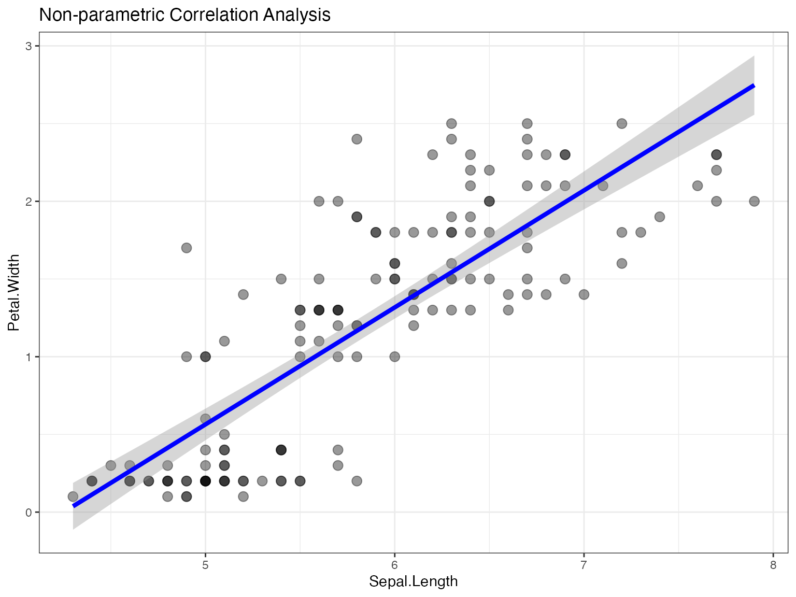
Robust Statistics
# Robust correlation analysis
result_robust <- jjscatterstats(
data = iris,
dep = "Sepal.Width",
group = "Petal.Length",
typestatistics = "robust",
mytitle = "Robust Correlation Analysis"
)
print(result_robust)
#>
#> SCATTER PLOT
#>
#> You have selected to use a scatter plot with correlation analysis.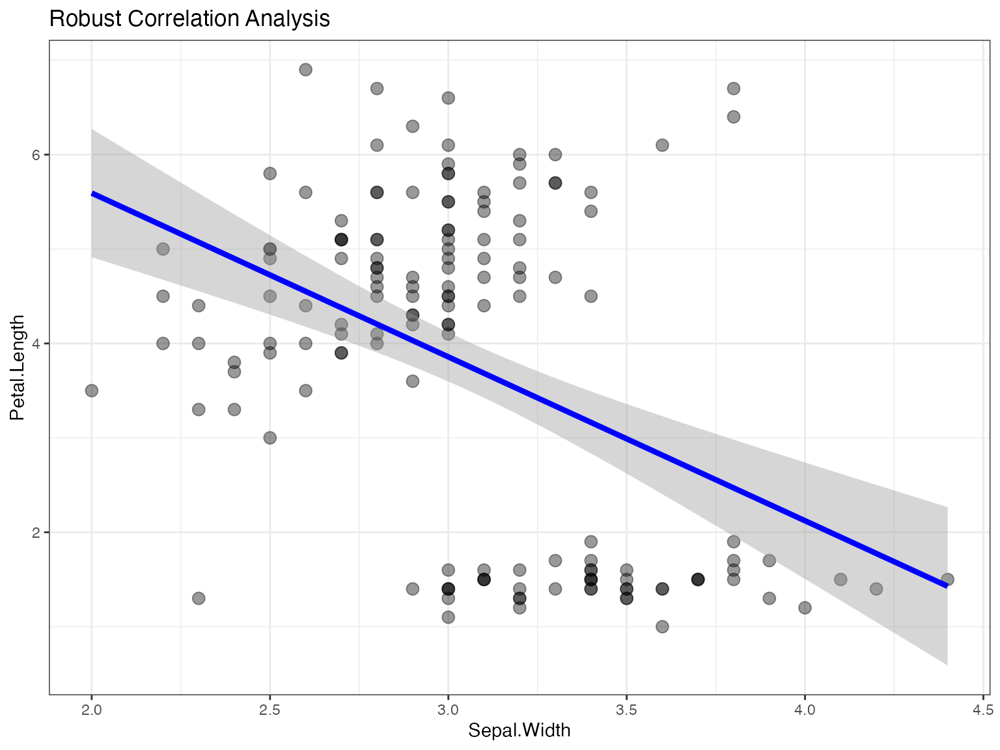
Bayesian Analysis
# Bayesian correlation analysis
result_bayes <- jjscatterstats(
data = iris,
dep = "Sepal.Length",
group = "Sepal.Width",
typestatistics = "bayes",
mytitle = "Bayesian Correlation Analysis"
)
print(result_bayes)
#>
#> SCATTER PLOT
#>
#> You have selected to use a scatter plot with correlation analysis.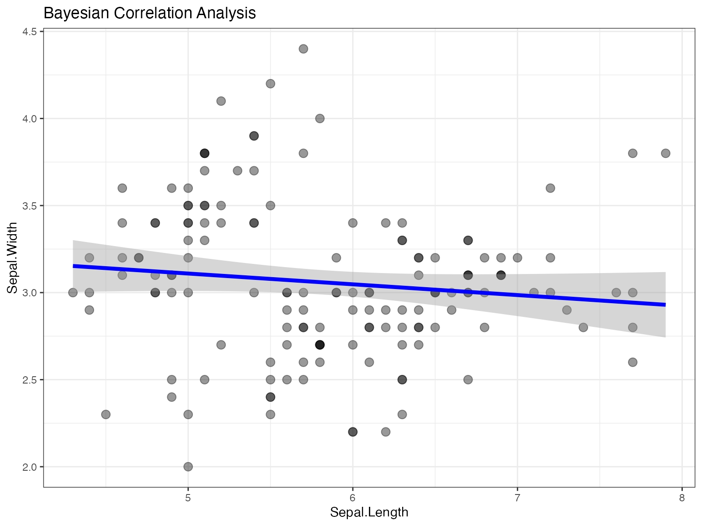
Grouped Analysis
Scatter Plot by Species
One of the most powerful features is the ability to create grouped scatter plots:
# Grouped scatter plot by species
result_grouped <- jjscatterstats(
data = iris,
dep = "Sepal.Length",
group = "Petal.Length",
grvar = "Species",
typestatistics = "parametric",
mytitle = "Correlation Analysis by Species"
)
print(result_grouped)
#>
#> SCATTER PLOT
#>
#> You have selected to use a scatter plot with correlation analysis.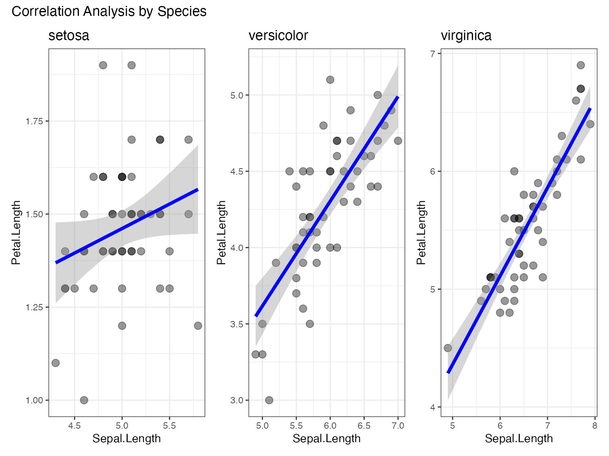
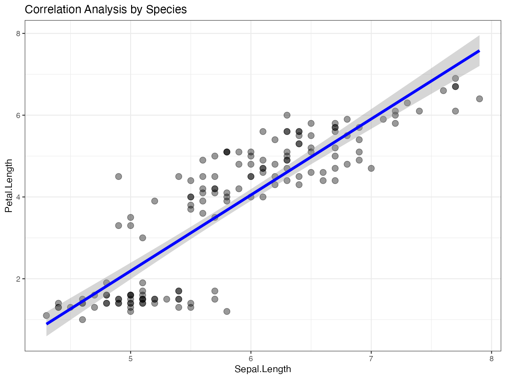
Multiple Group Analysis with mtcars
# Prepare mtcars data
mtcars_modified <- mtcars %>%
mutate(
transmission = factor(am, levels = c(0, 1), labels = c("Automatic", "Manual")),
cylinders = factor(cyl)
)
# Grouped analysis of mpg vs horsepower by transmission type
result_mtcars <- jjscatterstats(
data = mtcars_modified,
dep = "hp",
group = "mpg",
grvar = "transmission",
typestatistics = "parametric",
mytitle = "MPG vs Horsepower by Transmission Type",
xtitle = "Horsepower",
ytitle = "Miles per Gallon"
)
print(result_mtcars)
#>
#> SCATTER PLOT
#>
#> You have selected to use a scatter plot with correlation analysis.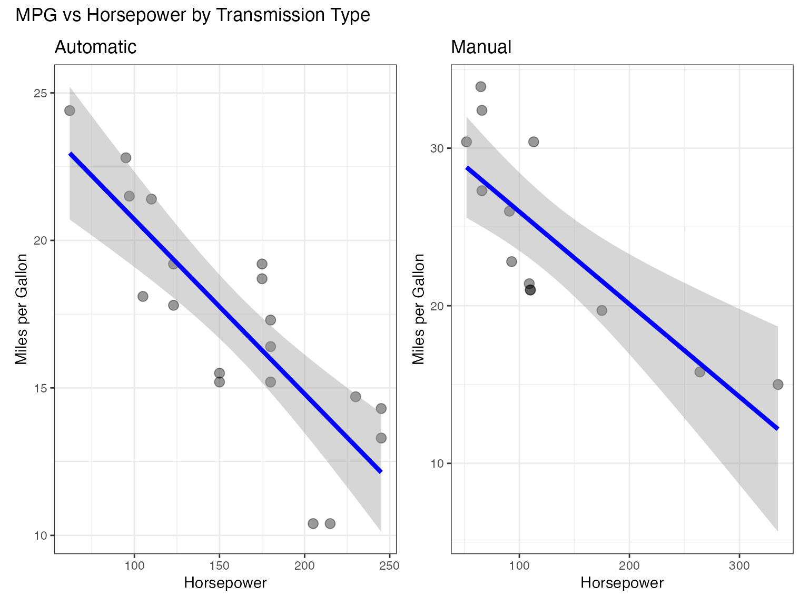
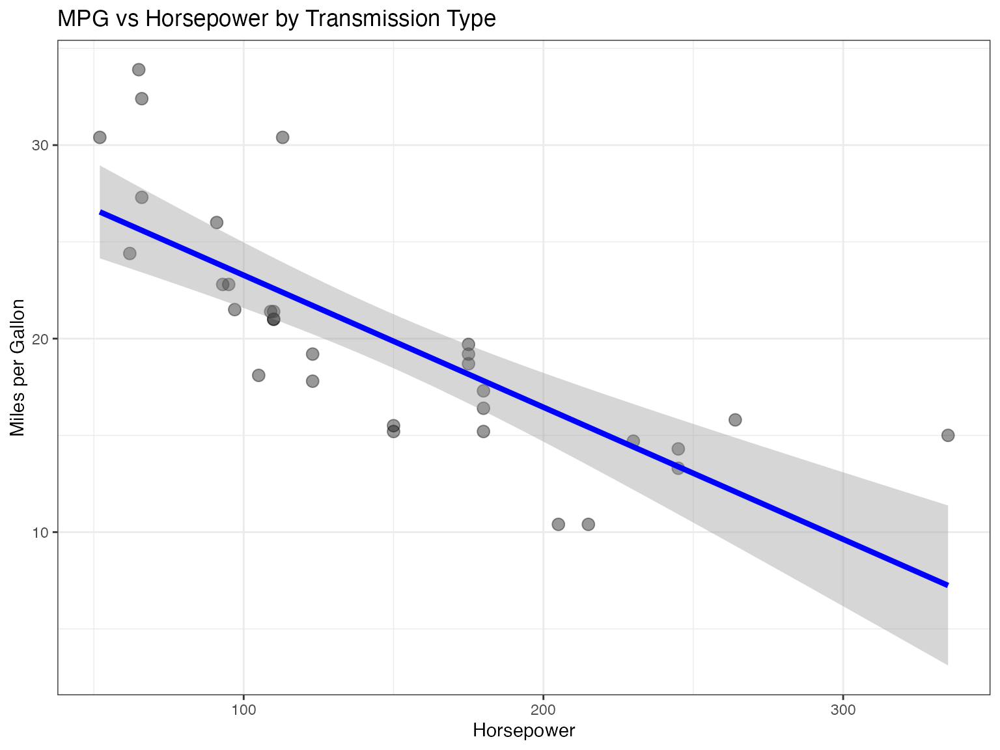
Clinical Research Applications
Using Clinical Test Data
# Example with clinical data (if available)
# This demonstrates typical clinical research scenarios
# Load clinical test data
data(jjscatterstats_clinical)
# Analyze tumor size vs Ki67 percentage
clinical_result <- jjscatterstats(
data = jjscatterstats_clinical,
dep = "tumor_size_mm",
group = "ki67_percentage",
grvar = "stage",
typestatistics = "parametric",
mytitle = "Tumor Size vs Ki67 by Cancer Stage",
xtitle = "Tumor Size (mm)",
ytitle = "Ki67 Percentage (%)"
)
print(clinical_result)Biomarker Correlation Analysis
# Biomarker correlation analysis
biomarker_result <- jjscatterstats(
data = jjscatterstats_clinical,
dep = "mutation_count",
group = "survival_months",
grvar = "histology",
typestatistics = "nonparametric",
mytitle = "Mutation Count vs Survival by Histology",
xtitle = "Mutation Count",
ytitle = "Survival (months)"
)
print(biomarker_result)Advanced Customization
Theme Customization
# Using original ggstatsplot theme
result_original_theme <- jjscatterstats(
data = iris,
dep = "Sepal.Length",
group = "Petal.Length",
originaltheme = TRUE,
mytitle = "Original ggstatsplot Theme"
)
print(result_original_theme)
#>
#> SCATTER PLOT
#>
#> You have selected to use a scatter plot with correlation analysis.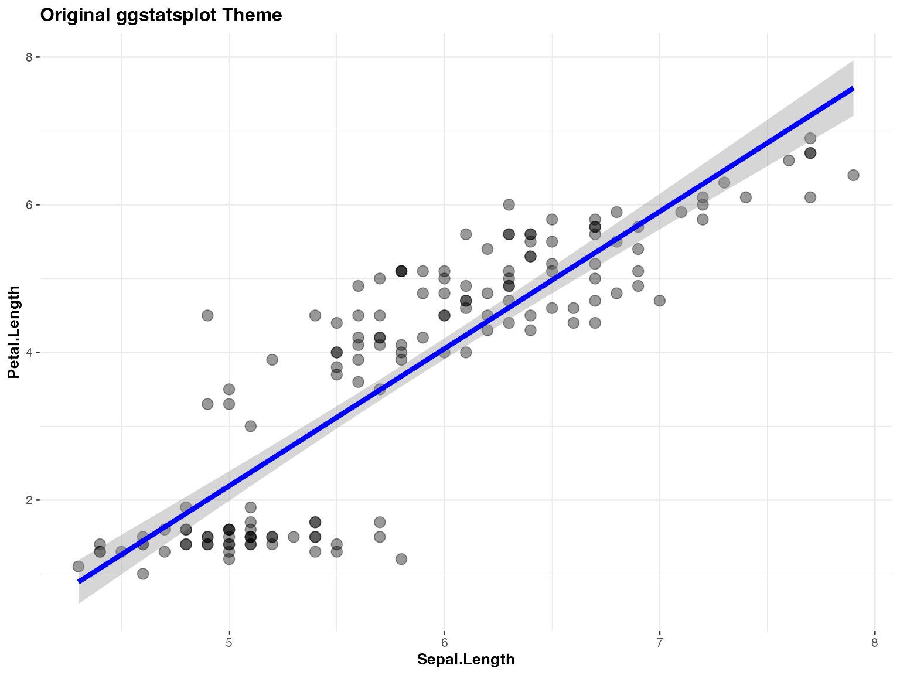
Custom Labels and Titles
# Comprehensive labeling
result_labeled <- jjscatterstats(
data = mtcars,
dep = "wt",
group = "mpg",
typestatistics = "parametric",
mytitle = "Vehicle Weight vs Fuel Efficiency",
xtitle = "Weight (1000 lbs)",
ytitle = "Miles per Gallon",
resultssubtitle = TRUE
)
print(result_labeled)
#>
#> SCATTER PLOT
#>
#> You have selected to use a scatter plot with correlation analysis.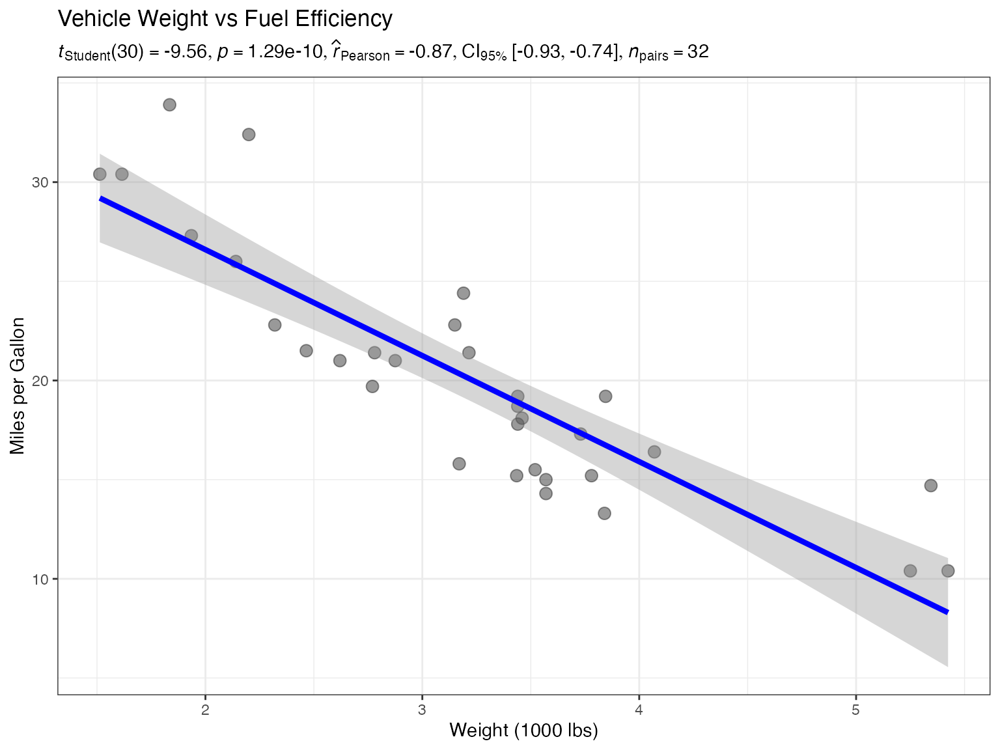
Controlling Statistical Results Display
# Hide statistical results subtitle
result_no_stats <- jjscatterstats(
data = iris,
dep = "Sepal.Width",
group = "Petal.Width",
typestatistics = "parametric",
mytitle = "Clean Plot Without Statistics",
resultssubtitle = FALSE
)
print(result_no_stats)
#>
#> SCATTER PLOT
#>
#> You have selected to use a scatter plot with correlation analysis.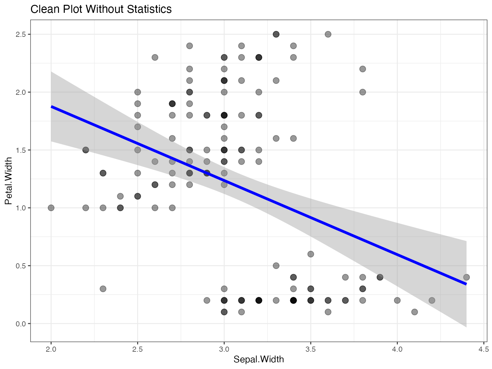
Performance Considerations
Large Dataset Handling
The function includes several performance optimizations:
# Performance test with larger dataset
data(jjscatterstats_performance)
# This should render efficiently due to optimizations
start_time <- Sys.time()
performance_result <- jjscatterstats(
data = jjscatterstats_performance,
dep = "measurement_1",
group = "measurement_2",
grvar = "lab_id",
typestatistics = "parametric",
mytitle = "Performance Test - Large Dataset"
)
end_time <- Sys.time()
cat("Rendering time:", difftime(end_time, start_time, units = "secs"), "seconds\n")
print(performance_result)Data Caching and Optimization
The function implements several performance enhancements:
- Data Preparation Caching: Processed data is cached to avoid recomputation
- Option Preprocessing: Common option processing is done once and cached
- Hash-based Change Detection: Only reprocesses data when inputs change
- Efficient Memory Usage: Minimizes data copying and transformation overhead
Edge Cases and Data Validation
Handling Missing Values
# Create data with missing values
iris_with_na <- iris
iris_with_na[1:10, "Sepal.Length"] <- NA
iris_with_na[15:20, "Petal.Length"] <- NA
# Function automatically handles missing values
result_na <- jjscatterstats(
data = iris_with_na,
dep = "Sepal.Length",
group = "Petal.Length",
typestatistics = "parametric",
mytitle = "Handling Missing Values"
)
print(result_na)
#>
#> SCATTER PLOT
#>
#> You have selected to use a scatter plot with correlation analysis.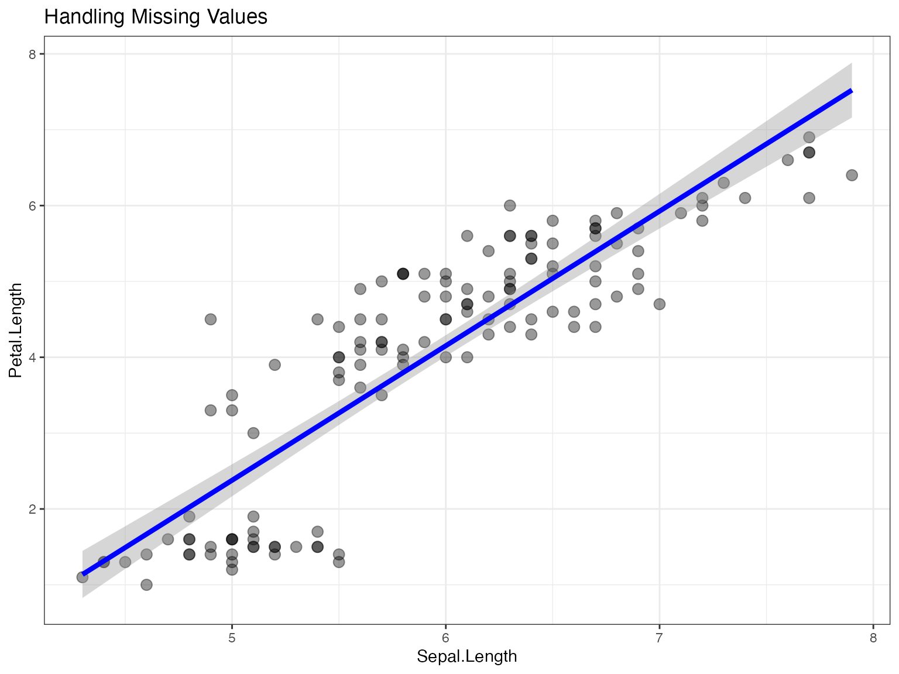
Input Validation
# Example of error handling
try({
result_error <- jjscatterstats(
data = data.frame(), # Empty dataset
dep = "nonexistent",
group = "variable",
typestatistics = "parametric"
)
})
#> Error : Argument 'dep' contains 'nonexistent' which is not present in the datasetBest Practices and Recommendations
Statistical Type Selection
- Parametric: Use when data is normally distributed (Pearson correlation)
- Non-parametric: Use for non-normal data or ordinal variables (Spearman correlation)
- Robust: Use when data has outliers (percentage bend correlation)
- Bayesian: Use for incorporating prior knowledge or uncertainty quantification
Visualization Guidelines
- Choose appropriate variables: Both x and y should be continuous
- Consider grouping: Use grouping variables to reveal subgroup patterns
- Label clearly: Always provide meaningful titles and axis labels
- Statistical reporting: Include statistical results unless specifically hiding them
Troubleshooting Common Issues
Variable Type Issues
# Ensure variables are numeric
str(iris[c("Sepal.Length", "Petal.Length")])
#> 'data.frame': 150 obs. of 2 variables:
#> $ Sepal.Length: num 5.1 4.9 4.7 4.6 5 5.4 4.6 5 4.4 4.9 ...
#> $ Petal.Length: num 1.4 1.4 1.3 1.5 1.4 1.7 1.4 1.5 1.4 1.5 ...
# The function automatically converts to numeric, but it's good practice to checkMemory and Performance
# For very large datasets, consider:
# 1. Sampling your data first
set.seed(123)
sampled_data <- iris[sample(nrow(iris), 100), ]
result_sampled <- jjscatterstats(
data = sampled_data,
dep = "Sepal.Length",
group = "Petal.Length",
typestatistics = "parametric"
)
# 2. Using simpler statistical methods for initial exploration
result_simple <- jjscatterstats(
data = iris,
dep = "Sepal.Length",
group = "Petal.Length",
typestatistics = "parametric",
resultssubtitle = FALSE # Faster rendering
)Summary
The jjscatterstats function provides a comprehensive
solution for scatter plot analysis with:
- Multiple statistical testing approaches
- Flexible grouping capabilities
- Performance optimizations for larger datasets
- Extensive customization options
- Robust error handling and validation
This makes it an excellent choice for exploratory data analysis, clinical research, and statistical reporting in the jamovi environment.
Function Reference
For complete parameter documentation, see:
# Session information
sessionInfo()
#> R version 4.6.0 (2026-04-24)
#> Platform: aarch64-apple-darwin23
#> Running under: macOS Tahoe 26.5.2
#>
#> Matrix products: default
#> BLAS: /Library/Frameworks/R.framework/Versions/4.6/Resources/lib/libRblas.0.dylib
#> LAPACK: /Library/Frameworks/R.framework/Versions/4.6/Resources/lib/libRlapack.dylib; LAPACK version 3.12.1
#>
#> locale:
#> [1] en_US.UTF-8/en_US.UTF-8/en_US.UTF-8/C/en_US.UTF-8/en_US.UTF-8
#>
#> time zone: Europe/Istanbul
#> tzcode source: internal
#>
#> attached base packages:
#> [1] stats graphics grDevices utils datasets methods base
#>
#> other attached packages:
#> [1] dplyr_1.2.1 ggplot2_4.0.3 jjstatsplot_1.0.53.01
#>
#> loaded via a namespace (and not attached):
#> [1] ggstatsplot_1.0.0 splines_4.6.0
#> [3] later_1.4.8 tibble_3.3.1
#> [5] ggpp_0.6.1 jmvcore_2.7.38
#> [7] polyclip_1.10-7 datawizard_1.3.1
#> [9] hardhat_1.4.3 rpart_4.1.27
#> [11] ggExtra_0.11.0 lifecycle_1.0.5
#> [13] rstatix_1.1.0 globals_0.19.1
#> [15] lattice_0.22-9 MASS_7.3-66
#> [17] insight_1.5.2 ggdist_3.3.3
#> [19] backports_1.5.1 magrittr_2.0.5
#> [21] sass_0.4.10 rmarkdown_2.31
#> [23] jquerylib_0.1.4 yaml_2.3.12
#> [25] httpuv_1.6.17 otel_0.2.0
#> [27] cowplot_1.2.0 pbapply_1.7-4
#> [29] RColorBrewer_1.1-3 easyalluvial_0.4.1
#> [31] lubridate_1.9.5 multcomp_1.4-31
#> [33] abind_1.4-8 purrr_1.2.2
#> [35] nnet_7.3-21 TH.data_1.1-5
#> [37] tweenr_2.0.3 sandwich_3.1-3
#> [39] ipred_0.9-15 lava_1.9.2
#> [41] ggrepel_0.9.8 listenv_1.0.0
#> [43] correlation_0.8.8 moments_0.14.1
#> [45] MatrixModels_0.5-4 parallelly_1.48.0
#> [47] pkgdown_2.2.1 codetools_0.2-20
#> [49] DT_0.34.0 ggforce_0.5.0
#> [51] tidyselect_1.2.1 farver_2.1.2
#> [53] viridis_0.6.5 effectsize_1.0.3
#> [55] WRS2_1.1-7 jsonlite_2.0.0
#> [57] progressr_1.0.0 Formula_1.2-6
#> [59] ggridges_0.5.7 ggalluvial_0.12.6
#> [61] survival_3.8-9 emmeans_2.0.4
#> [63] systemfonts_1.3.2 tools_4.6.0
#> [65] waffle_1.0.2 ragg_1.5.2
#> [67] Rcpp_1.1.2 glue_1.8.1
#> [69] prodlim_2026.03.11 gridExtra_2.3.1
#> [71] Rttf2pt1_1.3.14 xfun_0.60
#> [73] mgcv_1.9-4 distributional_0.8.1
#> [75] ggsegmentedtotalbar_0.1.0 withr_3.0.3
#> [77] fastmap_1.2.0 boot_1.3-32
#> [79] digest_0.6.39 timechange_0.4.0
#> [81] R6_2.6.1 mime_0.13
#> [83] estimability_2.0.0 ggprism_1.0.7
#> [85] textshaping_1.0.5 ggrain_0.1.2
#> [87] tidyr_1.3.2 generics_0.1.4
#> [89] data.table_1.18.4 recipes_1.3.3
#> [91] class_7.3-24 htmlwidgets_1.6.4
#> [93] parameters_0.29.2 pkgconfig_2.0.3
#> [95] gtable_0.3.6 timeDate_4052.112
#> [97] statsExpressions_2.0.0 S7_0.2.2
#> [99] BayesFactor_0.9.12-4.8 htmltools_0.5.9
#> [101] carData_3.0-6 scales_1.4.0
#> [103] gower_1.0.2 knitr_1.51
#> [105] coda_0.19-4.1 nlme_3.1-170
#> [107] curl_7.1.0 cachem_1.1.0
#> [109] zoo_1.9-0 stringr_1.6.0
#> [111] parallel_4.6.0 miniUI_0.1.2
#> [113] extrafont_0.20 desc_1.4.3
#> [115] pillar_1.11.1 grid_4.6.0
#> [117] reshape_0.8.10 vctrs_0.7.3
#> [119] promises_1.5.0 ggpubr_1.0.0
#> [121] car_3.1-5 xtable_1.8-8
#> [123] extrafontdb_1.1 paletteer_1.7.0
#> [125] evaluate_1.0.5 mvtnorm_1.4-2
#> [127] cli_3.6.6 compiler_4.6.0
#> [129] rlang_1.3.0 rstantools_2.7.0
#> [131] future.apply_1.20.2 ggsignif_0.6.4
#> [133] labeling_0.4.3 rematch2_2.1.2
#> [135] plyr_1.8.9 forcats_1.0.1
#> [137] fs_2.1.0 stringi_1.8.9
#> [139] viridisLite_0.4.3 bayestestR_0.18.1
#> [141] Matrix_1.7-6 hms_1.1.4
#> [143] patchwork_1.3.2 future_1.75.0
#> [145] shiny_1.14.0 haven_2.5.5
#> [147] igraph_2.3.3 broom_1.0.13
#> [149] RcppParallel_6.2.0 bslib_0.12.0
#> [151] polynom_1.4-1